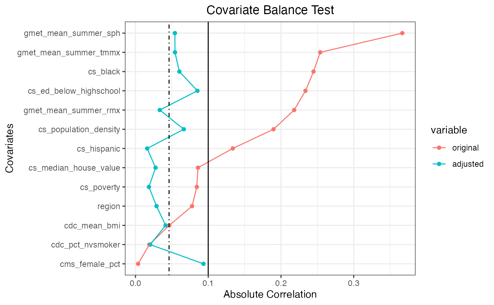
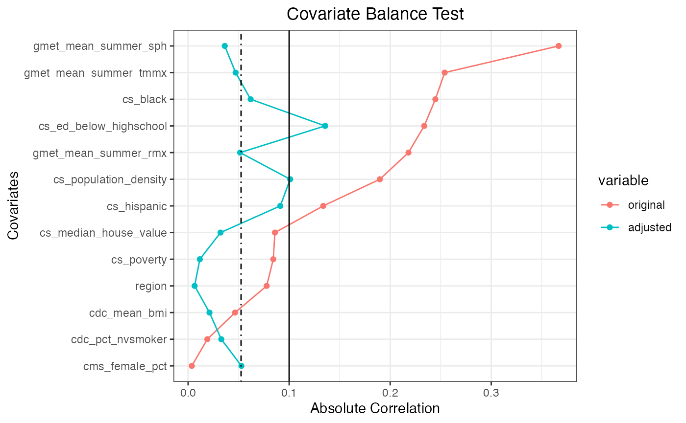
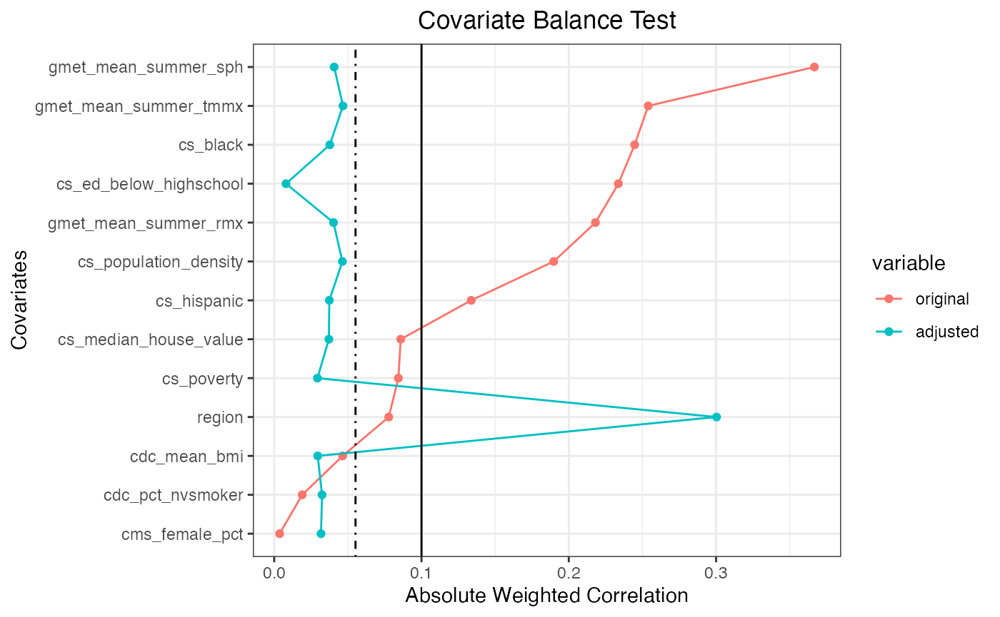
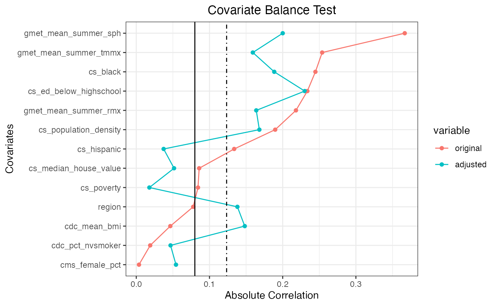

In this vignette, we present application of CausalGPS package on the Synthetic Medicare Data. In the dataset, we link the 2010 synthetic Medicare claims data to environmental exposures and potential confounders. The dataset is hosted on Harvard Dataverse (Khoshnevis, Wu, and Braun 2022).
Load Data and Preprocessing
| FIPS | qd_mean_pm25 | NAME | cs_poverty | cs_hispanic | cs_black | cs_white | cs_native | cs_asian | cs_ed_below_highschool | cs_household_income | cs_median_house_value | cs_total_population | cs_other | cs_area | cs_population_density | cdc_mean_bmi | cdc_pct_cusmoker | cdc_pct_sdsmoker | cdc_pct_fmsmoker | cdc_pct_nvsmoker | cdc_pct_nnsmoker | gmet_mean_tmmn | gmet_mean_summer_tmmn | gmet_mean_winter_tmmn | gmet_mean_tmmx | gmet_mean_summer_tmmx | gmet_mean_winter_tmmx | gmet_mean_rmn | gmet_mean_summer_rmn | gmet_mean_winter_rmn | gmet_mean_rmx | gmet_mean_summer_rmx | gmet_mean_winter_rmx | gmet_mean_sph | gmet_mean_summer_sph | gmet_mean_winter_sph | cms_mortality_pct | cms_white_pct | cms_black_pct | cms_others_pct | cms_hispanic_pct | cms_female_pct | STATE | STATE_CODE | region |
|---|---|---|---|---|---|---|---|---|---|---|---|---|---|---|---|---|---|---|---|---|---|---|---|---|---|---|---|---|---|---|---|---|---|---|---|---|---|---|---|---|---|---|---|---|---|
| 1001 | 11.85557 | Autauga County, Alabama | 0.0858086 | 0.0028053 | 0.1320132 | 0.8524752 | 0.0087459 | 0.0026403 | 0.2533003 | 37351 | 133900 | 53155 | 0.0013201 | 594.436 | 89.42090 | 3208.390 | 0.1463415 | 0.0243902 | 0.2439024 | 0.5609756 | 0.0243902 | 283.8634 | 295.4464 | 273.0409 | 297.2615 | 307.2943 | 284.5251 | 40.42980 | 45.25372 | 43.95282 | 88.97211 | 95.95946 | 85.72278 | 0.0094171 | 0.0167348 | 0.0040017 | 0.0000000 | 0.5958904 | 0.4041096 | 0.0000000 | 0.0000000 | 0.5547945 | 1 | AL | SOUTH |
| 1003 | 10.43793 | Baldwin County, Alabama | 0.0533287 | 0.0140393 | 0.0515350 | 0.9186271 | 0.0054157 | 0.0022422 | 0.1609521 | 40104 | 177200 | 175791 | 0.0081407 | 1589.784 | 110.57540 | 3249.755 | 0.1470588 | 0.0392157 | 0.2450980 | 0.5686275 | 0.0000000 | 285.8735 | 296.6723 | 275.4020 | 298.1579 | 306.4516 | 287.3572 | 42.34226 | 50.02479 | 43.42646 | 90.28333 | 95.14939 | 88.16227 | 0.0102607 | 0.0172820 | 0.0047839 | 0.0227273 | 0.6384298 | 0.3533058 | 0.0082645 | 0.0000000 | 0.5392562 | 1 | AL | SOUTH |
| 1005 | 11.50424 | Barbour County, Alabama | 0.1944298 | 0.0094587 | 0.3334209 | 0.6560694 | 0.0000000 | 0.0000000 | 0.4051498 | 22143 | 88200 | 27699 | 0.0010510 | 884.876 | 31.30269 | 2953.693 | 0.0714047 | 0.0504250 | 0.2168344 | 0.5645023 | 0.0111988 | 284.1352 | 295.3782 | 273.8296 | 297.6494 | 307.0302 | 285.5848 | 40.05212 | 46.02080 | 43.77853 | 90.76408 | 96.72028 | 86.72719 | 0.0097046 | 0.0169258 | 0.0043431 | 0.0000000 | 0.6901408 | 0.2816901 | 0.0281690 | 0.0000000 | 0.5070423 | 1 | AL | SOUTH |
| 1007 | 11.88692 | Bibb County, Alabama | 0.1130868 | 0.0010669 | 0.1219772 | 0.8662873 | 0.0000000 | 0.0000000 | 0.3886913 | 24875 | 81200 | 22610 | 0.0106686 | 622.582 | 36.31650 | 3255.287 | 0.1034483 | 0.0229885 | 0.3103448 | 0.5517241 | 0.0114943 | 283.5388 | 295.3145 | 272.5781 | 296.7969 | 307.0417 | 283.9070 | 41.59857 | 47.24975 | 43.87743 | 89.57623 | 96.48472 | 85.84614 | 0.0093942 | 0.0169568 | 0.0038307 | 0.0215264 | 0.6555773 | 0.3405088 | 0.0039139 | 0.0000000 | 0.5714286 | 1 | AL | SOUTH |
| 1009 | 11.65920 | Blount County, Alabama | 0.1047926 | 0.0094363 | 0.0105538 | 0.9684629 | 0.0058356 | 0.0000000 | 0.3594487 | 25857 | 113700 | 56692 | 0.0057114 | 644.776 | 87.92511 | 3500.333 | 0.0833333 | 0.0000000 | 0.2500000 | 0.6388889 | 0.0277778 | 282.6099 | 294.7041 | 271.3427 | 295.5558 | 306.4517 | 281.9145 | 42.44578 | 48.28317 | 46.07121 | 88.72523 | 96.37532 | 84.95932 | 0.0089541 | 0.0165894 | 0.0035027 | 0.0062112 | 0.7018634 | 0.2981366 | 0.0000000 | 0.0000000 | 0.6086957 | 1 | AL | SOUTH |
| 1011 | 11.65386 | Bullock County, Alabama | 0.1701807 | 0.0000000 | 0.5903614 | 0.4096386 | 0.0000000 | 0.0000000 | 0.4487952 | 20500 | 66300 | 10923 | 0.0000000 | 622.805 | 17.53839 | 3400.474 | 0.1282051 | 0.0384615 | 0.3333333 | 0.5000000 | 0.0000000 | 283.3906 | 295.0217 | 273.1478 | 297.2145 | 306.8042 | 285.0072 | 41.29272 | 46.77274 | 44.80368 | 92.81798 | 97.60276 | 88.14277 | 0.0096621 | 0.0169198 | 0.0042435 | 0.0103245 | 0.6666667 | 0.3185841 | 0.0132743 | 0.0014749 | 0.5501475 | 1 | AL | SOUTH |
Examples of Generating Pseudo Population
Scenario 1
- Causal Inference: Matching
- GPS model: Parametric
- Optimized_compile: True
confounders_s1 <- c("cs_poverty","cs_hispanic",
"cs_black",
"cs_ed_below_highschool",
"cs_median_house_value",
"cs_population_density",
"cdc_mean_bmi","cdc_pct_nvsmoker",
"gmet_mean_summer_tmmx",
"gmet_mean_summer_rmx",
"gmet_mean_summer_sph",
"cms_female_pct", "region"
)
study_data <- data[, c("qd_mean_pm25", confounders, "cms_mortality_pct")]
study_data$region <- as.factor(study_data$region)
study_data$cs_PIR <- study_data$cs_median_house_value/study_data$cs_household_income
# Choose subset of data
q1 <- stats::quantile(study_data$qd_mean_pm25,0.25)
q2 <- stats::quantile(study_data$qd_mean_pm25,0.99)
trimmed_data <- subset(study_data[stats::complete.cases(study_data) ,],
qd_mean_pm25 <= q2 & qd_mean_pm25 >= q1)
trimmed_data$gmet_mean_summer_sph <- pow2(trimmed_data$gmet_mean_summer_sph)
set.seed(172)
pseudo_pop_1 <- generate_pseudo_pop(trimmed_data$cms_mortality_pct,
trimmed_data$qd_mean_pm25,
data.frame(trimmed_data[, confounders_s1,
drop=FALSE]),
ci_appr = "matching",
pred_model = "sl",
gps_model = "parametric",
bin_seq = NULL,
trim_quantiles = c(0.0 ,
1.0),
optimized_compile = TRUE,
use_cov_transform = TRUE,
transformers = list("pow2","pow3","clog"),
sl_lib = c("m_xgboost"),
params = list(xgb_nrounds=c(17),
xgb_eta=c(0.28)),
nthread = 1,
covar_bl_method = "absolute",
covar_bl_trs = 0.1,
covar_bl_trs_type = "mean",
max_attempt = 1,
matching_fun = "matching_l1",
delta_n = 0.1,
scale = 1)
#> Mean absolute correlation: 0.149224434158771 | Covariate balance threshold: 0.1
#> Loading required package: nnls
#> Mean absolute correlation: 0.046174492691644 | Covariate balance threshold: 0.1
#> Covariate balance condition has been met (iteration: 1/1)
#> Best Mean absolute correlation: 0.046174492691644 | Covariate balance threshold: 0.1
plot(pseudo_pop_1)
Scenario 2
- Causal Inference: Matching
- GPS model: Parametric
- Optimized_compile: False
set.seed(172)
pseudo_pop_2 <- generate_pseudo_pop(trimmed_data$cms_mortality_pct,
trimmed_data$qd_mean_pm25,
data.frame(trimmed_data[, confounders_s1,
drop=FALSE]),
ci_appr = "matching",
pred_model = "sl",
gps_model = "parametric",
bin_seq = NULL,
trim_quantiles = c(0.0 ,
1.0),
optimized_compile = FALSE,
use_cov_transform = TRUE,
transformers = list("pow2","pow3","clog"),
sl_lib = c("m_xgboost"),
params = list(xgb_nrounds=c(17),
xgb_eta=c(0.28)),
nthread = 1,
covar_bl_method = "absolute",
covar_bl_trs = 0.1,
covar_bl_trs_type = "mean",
max_attempt = 1,
matching_fun = "matching_l1",
delta_n = 0.1,
scale = 1)
#> Mean absolute correlation: 0.150596118336646 | Covariate balance threshold: 0.1
#> Mean absolute correlation: 0.0468679750728689 | Covariate balance threshold: 0.1
#> Covariate balance condition has been met (iteration: 1/1)
#> Best Mean absolute correlation: 0.0468679750728689 | Covariate balance threshold: 0.1
plot(pseudo_pop_2)By activating optimized_compile flag, we keep track of
number of data samples, instead of aggregating them. Both approach
should result in the same values, however,
optimized_compile version will consume less memory.
optimized_data_1 <- pseudo_pop_1$pseudo_pop[,c("w","gps","counter")]
nonoptimized_data_2 <- pseudo_pop_2$pseudo_pop[,c("w","gps","counter")]
print(paste("Number of rows of data in the optimized approach: ",
nrow(optimized_data_1)))
#> [1] "Number of rows of data in the optimized approach: 2300"
print(paste("Number of rows of data in the non-optimized approach: ",
nrow(nonoptimized_data_2)))
#> [1] "Number of rows of data in the non-optimized approach: 140300"
print(paste("Sum of data samples in the optimized approach: ",
sum(optimized_data_1$counter)))
#> [1] "Sum of data samples in the optimized approach: 140300"
print(paste("Number of data in the non-optimized approach: ",
length(nonoptimized_data_2$w)))
#> [1] "Number of data in the non-optimized approach: 140300"
# Replicate gps values of optimized approach
expanded_opt_data_1 <- optimized_data_1[rep(seq_len(nrow(optimized_data_1)),
optimized_data_1$counter), 1:3]
exp_gps_a_1 <- expanded_opt_data_1$gps
gps_b_1 <- nonoptimized_data_2$gps
differences <- sort(gps_b_1) - sort(exp_gps_a_1)
print(paste("Sum of differences in gps values between optimized and ",
"non-optimized approaches is: ",
sum(differences)))
#> [1] "Sum of differences in gps values between optimized and non-optimized approaches is: 0"Scenario 3
- Causal Inference: Matching
- GPS model: Non-Parametric
- Optimized_compile: True
trimmed_data <- subset(study_data[stats::complete.cases(study_data) ,],
qd_mean_pm25 <= q2 & qd_mean_pm25 >= q1)
set.seed(8967)
pseudo_pop_3 <- generate_pseudo_pop(trimmed_data$cms_mortality_pct,
trimmed_data$qd_mean_pm25,
data.frame(trimmed_data[, confounders_s1,
drop=FALSE]),
ci_appr = "matching",
pred_model = "sl",
gps_model = "non-parametric",
bin_seq = NULL,
trim_quantiles = c(0.0 ,
1.0),
optimized_compile = TRUE,
use_cov_transform = TRUE,
transformers = list("pow2","pow3","clog"),
sl_lib = c("m_xgboost"),
params = list(xgb_nrounds=c(12),
xgb_eta=c(0.1)),
nthread = 1,
covar_bl_method = "absolute",
covar_bl_trs = 0.1,
covar_bl_trs_type = "mean",
max_attempt = 1,
matching_fun = "matching_l1",
delta_n = 0.1,
scale = 1)
#> Mean absolute correlation: 0.149224434158771 | Covariate balance threshold: 0.1
#> Mean absolute correlation: 0.0524109107056938 | Covariate balance threshold: 0.1
#> Covariate balance condition has been met (iteration: 1/1)
#> Best Mean absolute correlation: 0.0524109107056938 | Covariate balance threshold: 0.1
plot(pseudo_pop_3)
Scenario 4
- Causal Inference: Weighting
- GPS model: Parametric
- Optimized_compile: N/A
trimmed_data <- subset(study_data[stats::complete.cases(study_data) ,],
qd_mean_pm25 <= q2 & qd_mean_pm25 >= q1)
trimmed_data$cs_poverty <- pow2(trimmed_data$cs_poverty)
set.seed(672)
pseudo_pop_4 <- generate_pseudo_pop(trimmed_data$cms_mortality_pct,
trimmed_data$qd_mean_pm25,
data.frame(trimmed_data[, confounders_s1,
drop=FALSE]),
ci_appr = "weighting",
pred_model = "sl",
gps_model = "parametric",
bin_seq = NULL,
trim_quantiles = c(0.0 ,
1.0),
optimized_compile = TRUE,
use_cov_transform = TRUE,
transformers = list("pow2","pow3","clog"),
sl_lib = c("m_xgboost"),
params = list(xgb_nrounds=c(35),
xgb_eta=c(0.14)),
nthread = 1,
covar_bl_method = "absolute",
covar_bl_trs = 0.1,
covar_bl_trs_type = "mean",
max_attempt = 1,
matching_fun = "matching_l1",
delta_n = 0.1,
scale = 1)
#> Mean absolute correlation: 0.149224434158771 | Covariate balance threshold: 0.1
#> Mean absolute correlation: 0.0552116564078729 | Covariate balance threshold: 0.1
#> Covariate balance condition has been met (iteration: 1/1)
#> Best Mean absolute correlation: 0.0552116564078729 | Covariate balance threshold: 0.1
plot(pseudo_pop_4)
Covariate Balance
In the previous examples, we passed specific parameters for estimating GPS values. Achieving acceptable covariate balance can be computed by searching for the most appropriate parameters and might not be a simple task. This package uses transformers on the features to get an acceptable covariate balance. The following parameters are directly related to searching for an acceptable covariate balance.
-
covar_bl_trs: Is the acceptable threshold to stop
searching. It can be computed either by
mean,median, ormaximalvalue of features correlation, which is defined in covar_bl_trs_type. -
params: In different iterations, we choose a
parameter at random from the provided list. For example, by
xgb_nrounds=seq(1,100)in the parameters,nroundparameter forxgboosttrainer will be selected a number between 1 and 100 at random, at each iteration. - transformers: After each iteration, we choose a feature with the highest correlation and apply a transformer from the provided list. All transformers should be applied to a feature before reapplying the same transformer on the same feature.
- max_attempt: Number of test iteration. If the covar_bl_trs is not met, the search will stop after max_attempt iteration and will return the best found population.
Scenario 5
Causal Inference: Matching + searching for acceptable covariate balance
GPS model: Non-Parametric
Optimized_compile: True
-
Search domain:
-
transformers:pow2,pow3,clog. -
nroundforxgboost: 10-100. -
etaforxgboost: 0.1-0.5. -
max_attempt: 5. -
covar_bl_trs: 0.08. -
covar_bl_trs_type:mean
-
trimmed_data <- subset(study_data[stats::complete.cases(study_data) ,],
qd_mean_pm25 <= q2 & qd_mean_pm25 >= q1)
set.seed(328)
pseudo_pop_5 <- generate_pseudo_pop(trimmed_data$cms_mortality_pct,
trimmed_data$qd_mean_pm25,
data.frame(trimmed_data[, confounders_s1,
drop=FALSE]),
ci_appr = "matching",
pred_model = "sl",
gps_model = "non-parametric",
bin_seq = NULL,
trim_quantiles = c(0.0 ,
1.0),
optimized_compile = TRUE,
use_cov_transform = TRUE,
transformers = list("pow2","pow3","clog"),
sl_lib = c("m_xgboost"),
params = list(xgb_nrounds=seq(10, 100, 1),
xgb_eta=seq(0.1,0.5,0.01)),
nthread = 1,
covar_bl_method = "absolute",
covar_bl_trs = 0.08,
covar_bl_trs_type = "mean",
max_attempt = 5,
matching_fun = "matching_l1",
delta_n = 0.1,
scale = 1)
#> Mean absolute correlation: 0.149224434158771 | Covariate balance threshold: 0.08
#> Mean absolute correlation: 0.123384745637948 | Covariate balance threshold: 0.08
#> Mean absolute correlation: 0.200329942130683 | Covariate balance threshold: 0.08
#> Mean absolute correlation: 0.165235822265409 | Covariate balance threshold: 0.08
#> Mean absolute correlation: 0.160530585591875 | Covariate balance threshold: 0.08
#> Mean absolute correlation: 0.180224262686973 | Covariate balance threshold: 0.08
#> Covariate balance condition has not been met.
#> Best Mean absolute correlation: 0.123384745637948 | Covariate balance threshold: 0.08
plot(pseudo_pop_5)
In this example, after 5 attempts, we could not find a pseudo population that can satisfy the covariate balance test.